Пылесос BORK V705 WHITE
Особенности HEPA-фильтрации
Бумажный HEPA фильтр:
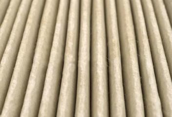Какими свойствами обладает бумага? Бумага легко намокает, при этом многократно теряет прочность и неравномерно уменьшается в размере в месте намокания (коробится). Бумажный HEPA нельзя мыть водой. После первой же промывки водой фильтр уменьшает фильтрующую способность так, как целлюлозные волокна под действием воды разбухают и теряют свою структуру. Мало того, его просушить достаточно сложно. А при наличии влаги на фильтре неизбежно появление плесени - сильнейшего аллергена. Отсюда вывод – бумажных, моющихся фильтров не бывает.
Эффективность HEPA фильтров:
HEPA фильтры максимально эффективны в самом начале работы. По мере загрязнения фильтра эффективность очистки существенно уменьшается. Когда забиваются все поры, пыль идет в обход фильтра, загрязняя тем самым помещение.

Особенности пылесосов BORK 7-й серии
ElectroBag - система сбора пыли.
Потребителям нелегко оценить системы фильтрации пылесоса. Это приводит к неопределенности при его выборе. Компания BORK поставила перед собой задачу найти эффективную фильтрационную систему с длительным сроком службы.
Еще в начале 80-х годов, три крупные компании совместно разработали материал, который соответствовал строгим стандартам и нормам очистки. Этим компаниями были:
- Компания ЗМ (с 1902 г.) - динамично развивающаяся многопрофильная международная корпорация с вековой историей и многолетними традициями. Компания производит тысячи уникальных продуктов и занимает лидирующие позиции во многих сферах производства: от материалов для здравоохранения до товаров для дома и офиса.
-
Freudenberg Gruppe (с 1849 г.) предлагает индивидуальные, инновационные технологические продукты и услуги для клиентов в различных областях промышленности. Клиентами Группы компаний также являются гражданская авиация, железнодорожные транспортные средства, медицинская и полупроводниковая отрасли.
Freudenberg разрабатывает и производит уплотнения, фильтры, нетканые материалы для медицинской техники. -
Компания ServiceMaster Clean (с 1929 г.), одна из крупнейших клининговых компаний США в секторе медицинских учреждений.

Новый материал стал основой для создания нового типа пылесборника, названного ElectroBag, и фильтра Hospital-Grade-Miсrofilter, которыми сейчас комплектуются все пылесосы BORK 7-ой серии.

В отличие от обычных фильтров, фильтрация проходит не по механическому принципу (забивая поры фильтра), а по принципу электростатики; заряженные микроволокна фильтра притягивают пылевые частицы. Это придает фильтру открытую структуру, которая легко пропускает поток воздуха и одновременно уменьшает вероятность засорения.
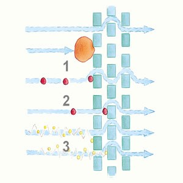Иными словами, при работе с ElectroBag пыль стремится задержаться на волокнах материала, а при работе с классическим пылесборником, пыль пролетает между волокнами, забивая поры фильтра.
ElectroBag - система сбора пыли, совмещающая в себе плюсы мешковых и контейнерных пылесосов. С одной стороны - высокая мощность всасывания, низкий уровень шума и гигиеничность в работе; с другой стороны – долгий срок службы фильтров, без значительных потерь силы всасывания.
Пылесборник BORK:
Для производства мешков и фильтров используется синтетический диэлектрик (полипропилен), поляризация которого осуществляется в высоковольтном поле.
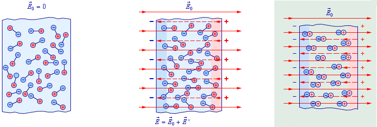3 слоя электростатического фильтра, использующихся в мешках, электростатический моторный фильтр, после которого воздух выходит полностью очищенный и выпускной электростатический фильтр, удерживающий графитовую пыль со щеток двигателя, обеспечивают фильтрацию S-класса*.
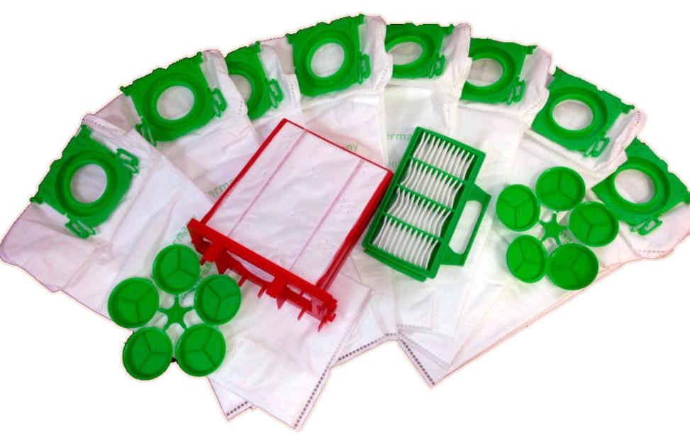При размерах пыли от 0,3 до 10 микрон фильтрация составляет 99,9991%.
*Фильтрация S-класса обеспечивает эффективность фильтрации 99.9% и более (по норме DIN 24184: задержка частиц более 0.3 микрон)

Пылесборник BORK – высокоэффективный 3-х слойный пылесборник, специально разработанный как для людей, страдающих от аллергии, так и для тех, кто предъявляет повышенные требования к гигиене.
При удалении из пылесоса герметично закрывается специальной крышкой.
Производится в Германии
Главная особенность электростатической системы в продолжительном сроке эффективной фильтрации.
Также продолжительный срок службы пылесборника обеспечивает его особая форма, расположение и распределение воздушного потока в пылесосе.
Рекомендуется регулярно менять фильтры по мере загрязнения, как минимум, после использования 16 пылесборников.
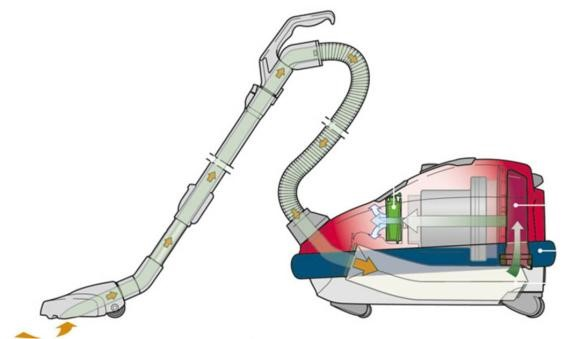Особенности моделей BORK V705
Запатентованный мягкий бампер
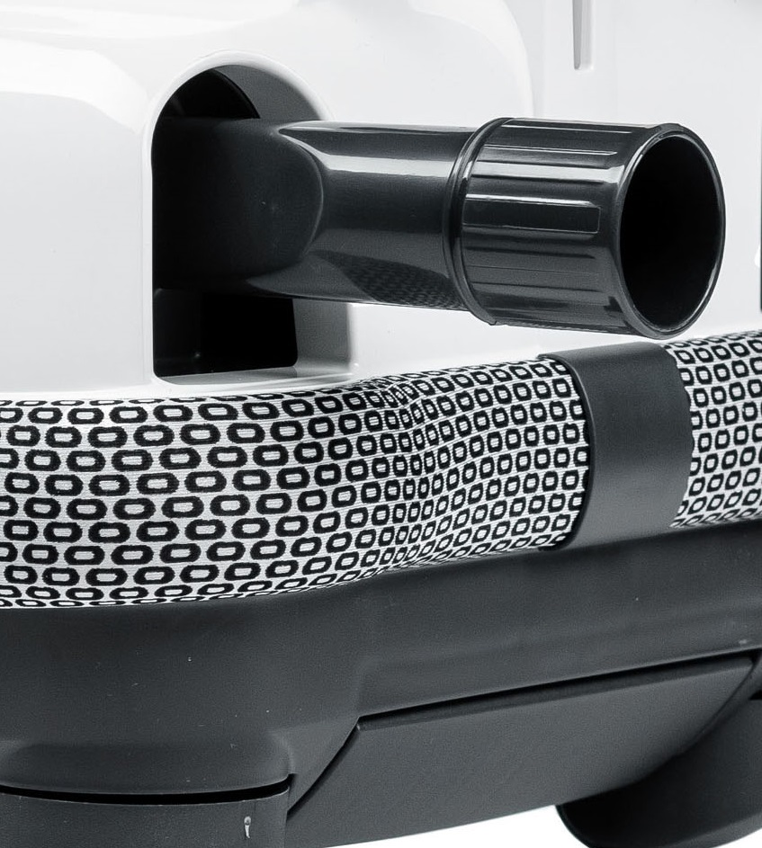Запатентованный двухслойный мягкий бампер из высокопрочного материала (полиуретан) надежно защищает Вашу мебель, стены и сам пылесос от механических повреждений.
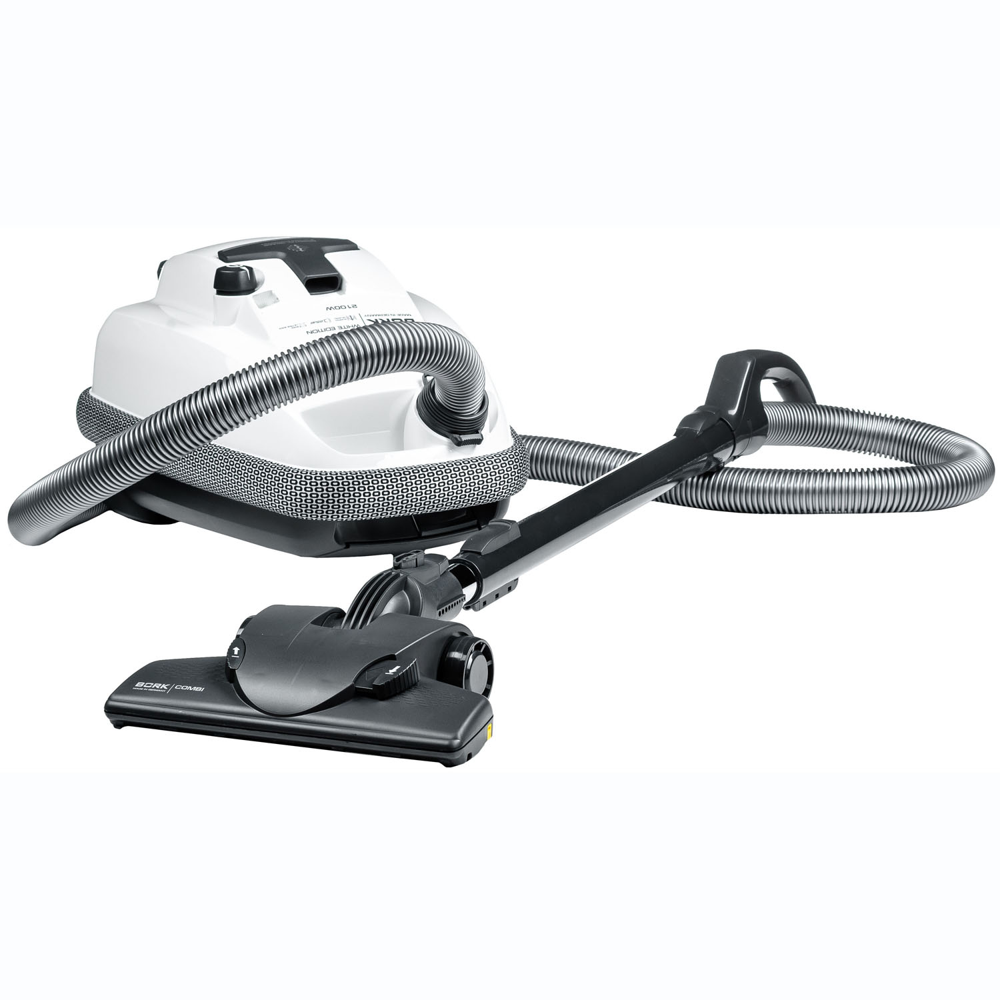Кроме того, уникальная конструкция бампера обеспечивает дополнительный комфорт при уборке, эффективно снижая уровень мощности шума пылесоса до 65 дБ, а выходящий воздух распределяется по всему периметру пылесоса, не поднимая пыль, находящуюся на полу. При необходимости бампер можно легко почистить или заменить.
Отличная маневренность
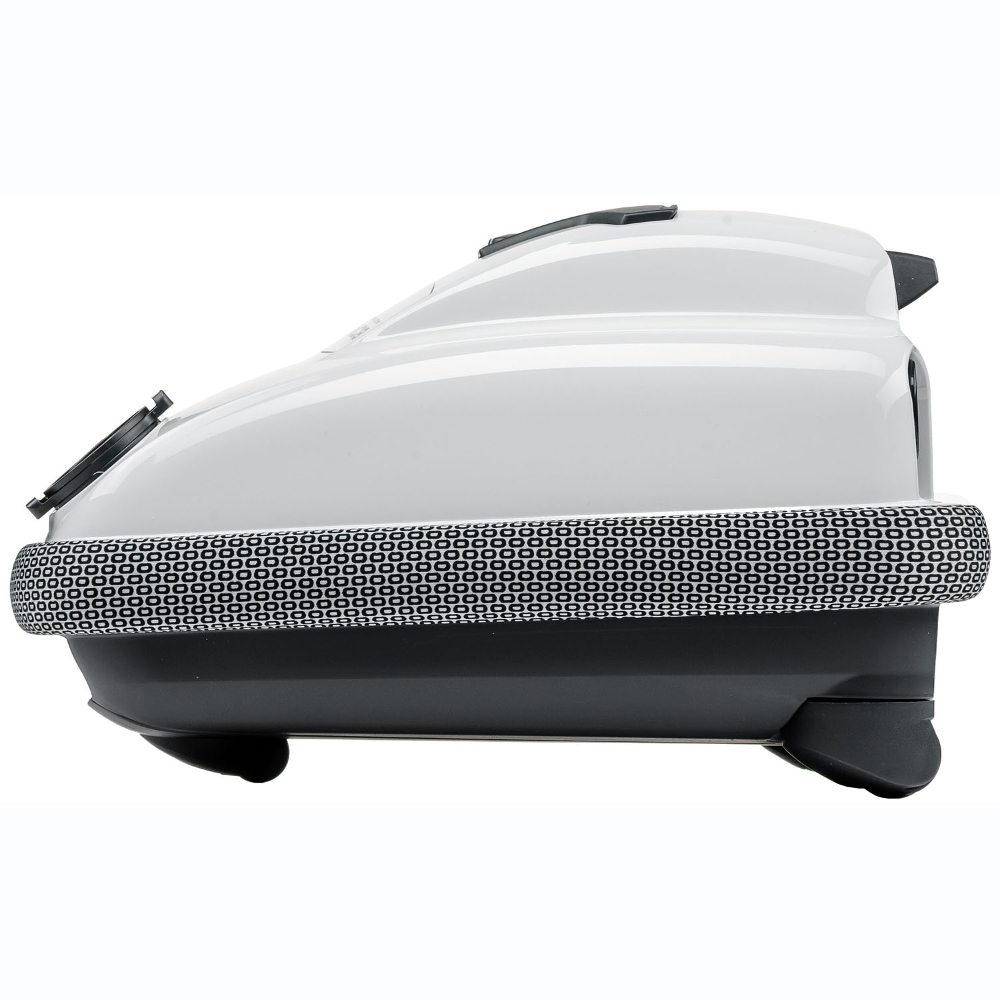Компактные размеры, прорезиненные, подвижные колеса, вращающиеся на 360° и высокая колесная база обеспечивают отличную маневренность и предсказуемость движения пылесоса, не повреждая твердые покрытия.
Рукоятка анатомической конструкции
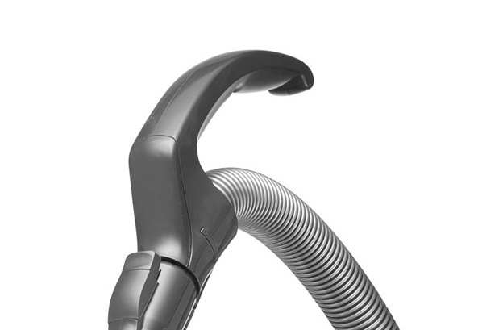Рукоятка анатомической конструкции идеально подходит для уборки твердых покрытий, ковров, штор и занавесок. Антистатическая пластина обеспечивает максимальный комфорт при управлении пылесосом.
Насадка BORK COMBI
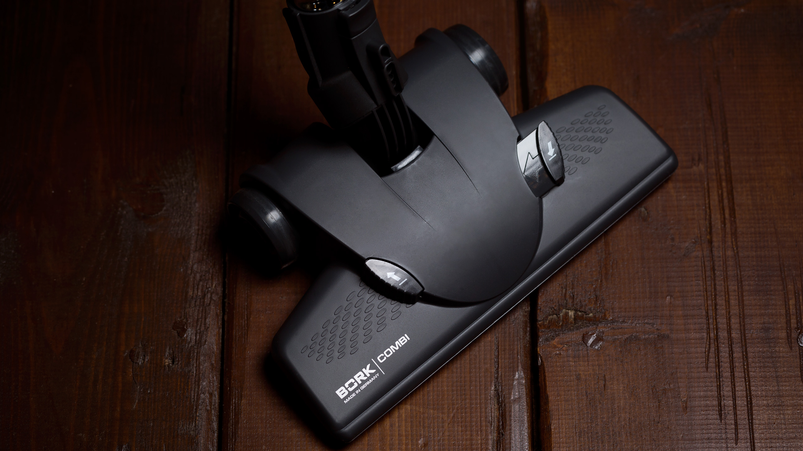Не имеющая аналогов двухпоточная система всасывания гарантирует эффективное удаление загрязнений на всей площади соприкосновения BORK COMBI с убираемой поверхностью.
Специальный амортизатор, гасящий удары, ребра жесткости, металлическая вставка для снятия электростатического напряжения и укрепления передней части, и качественная фиксация пластин для сваливания ниток, шерсти и волос обеспечивают долгий срок службы насадки.
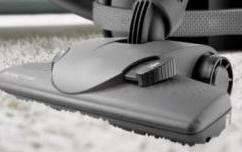Четыре прорезиненных ролика обеспечивают легкость скольжения. При этом не повреждается очищаемая поверхность и не происходит присасывания насадки к полу.
Эффективная уборка обеспечивается максимальным воздухотоком.
Съемная «плавающая» щетина легко может быть очищена от ниток, волос и шерсти.
При горизонтальном и вертикальном положении трубы щетка не теряет контакт с убираемой поверхностью, сохраняя угол 90 градусов. Шарнирный механизмобеспечивает отличную маневренность и постоянный контакт с очищаемой поверхностью.
Насадка BORK PARQUET (Приобретается отдельно)
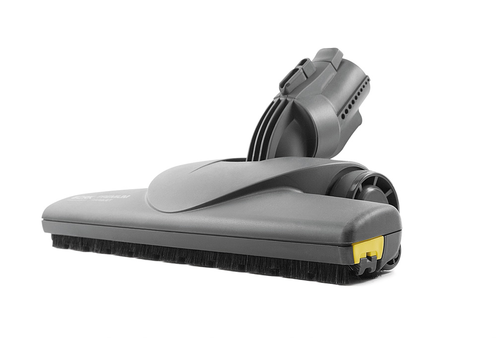- Паркетная насадка с натуральным ворсом и прорезиненными колесами подходит для уборки всех типов твердых покрытий.
- Щетки легко извлекаются для очистки.
- При работе насадки не повреждаются гладкие покрытия.
- Шарнирный механизм обеспечивает отличную маневренность и постоянный контакт с очищаемой поверхностью.
Внутренняя геометрия насадки в воздухозаборном отверстии имеет микроциклон, ускоряющий поток всасываемого воздуха.
Удобство использования и хранения дополнительных насадок
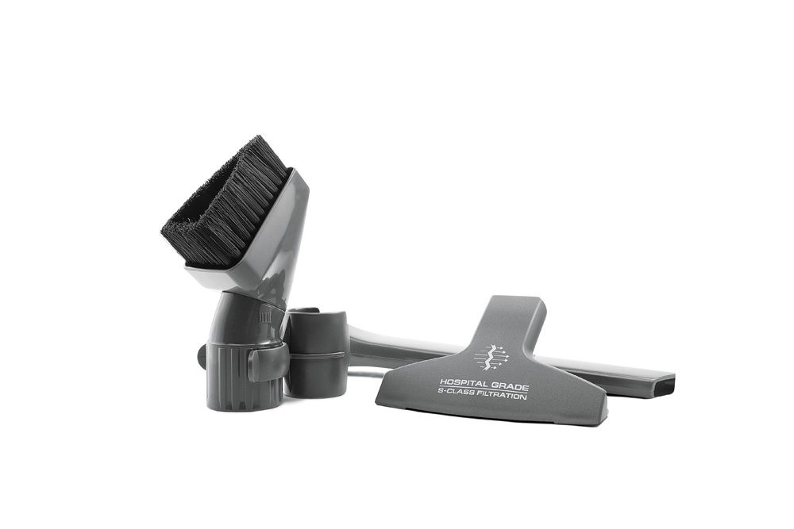Дополнительные насадки хранятся на корпусе пылесоса, что позволяет легко их заменять в процессе уборки.
Длина щелевой насадки составляет 29 см.
Удобная треугольная насадка для корпусной мебели с длинным ворсом позволяет легко пылесосить в углах.
Турбощетка BORK (Приобретается отдельно)
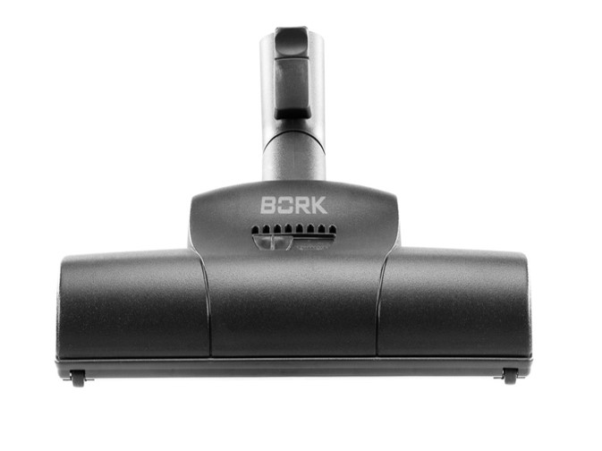Насадка для уборки ковровых покрытий (с регулировкой под ворс ковра). Рекомендована для сбора шерсти домашних животных.
Удобная парковка
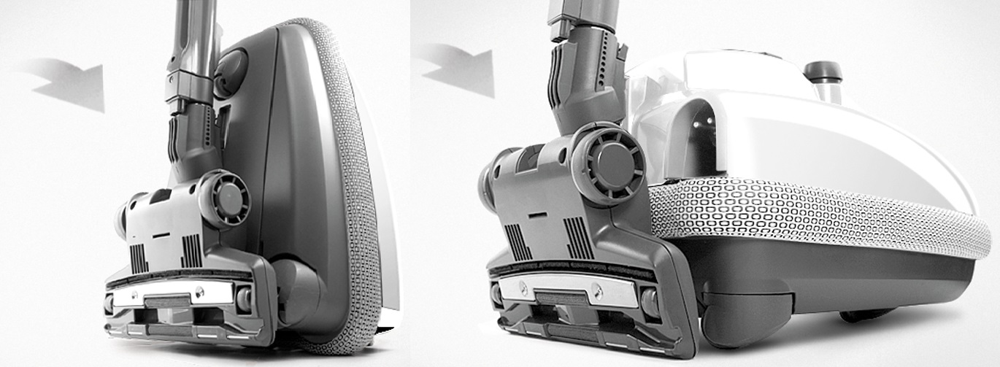Горизонтальная и вертикальная парковка обеспечивает удобное хранение пылесоса, не прибегая к разборке шланга и насадок.
BORK V705 WHITE Характеристики
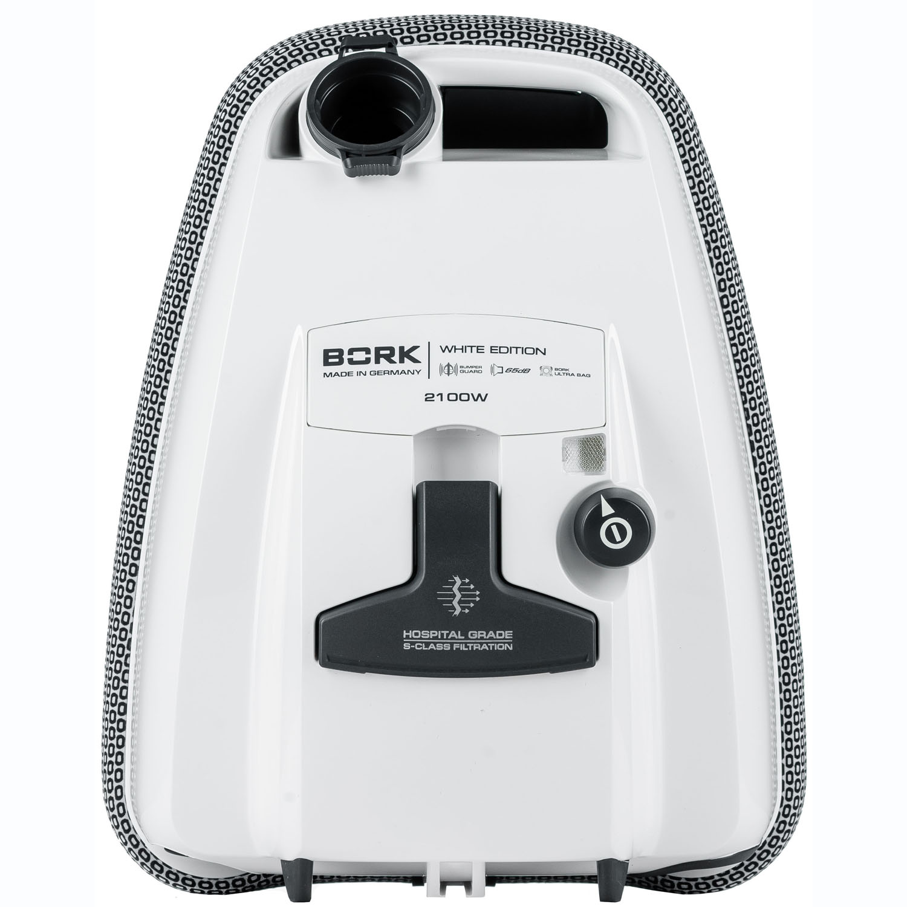
Потребляемая мощность, 2100 Вт
Мощность всасывания, 440 аВт
Уровень шума, 65 дб
Фильтрация: ElectroBag
Регулировка мощности всасывания: на корпусе
Объём мешка: 3 л.
Индикация включения: Да
Индикация заполнения пылесборника: Электронная
Плавный пуск двигателя: Да
Отключение при перегреве: Да
Вертикальная и горизонтальная парковка: Да
Ударопрочный корпус: Да
Защитный бампер: Да
Прорезиненные колёса: Да
Вращение колёс на 360⁰: Да
Телескопическая металлическая трубка: Да
Насадка BORK Combi: Да
Щелевая насадка 29 см: Да
Насадка для мягкой мебели: Да
Насадка для корпусной мебели треугольная: Да
Аксессуары насадки: V7P1, V7A1, AV700
Аксессуары пылесборники фильтры: V7B1, V7B1
Цвет: Зелёный
Вес: 5,3 кг
Страна производства: Германия